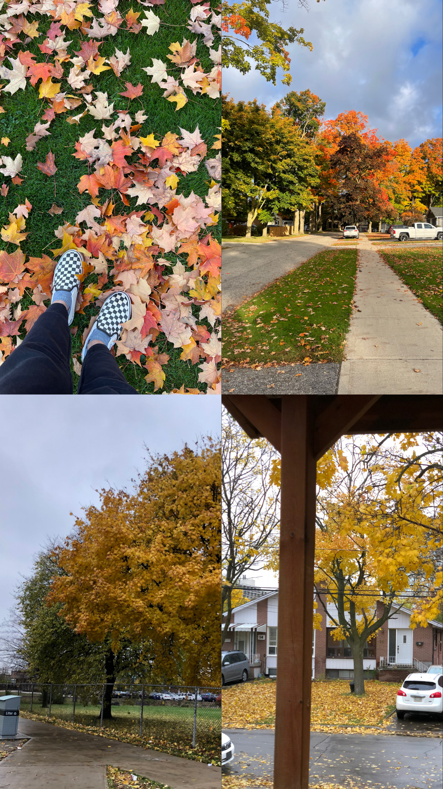
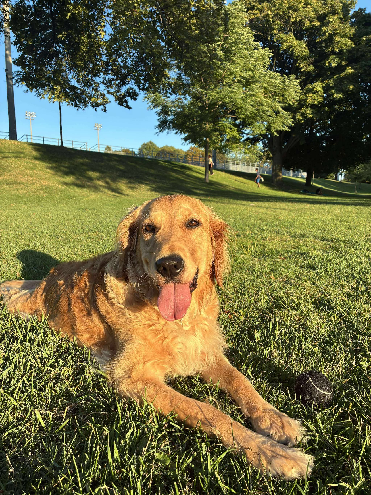
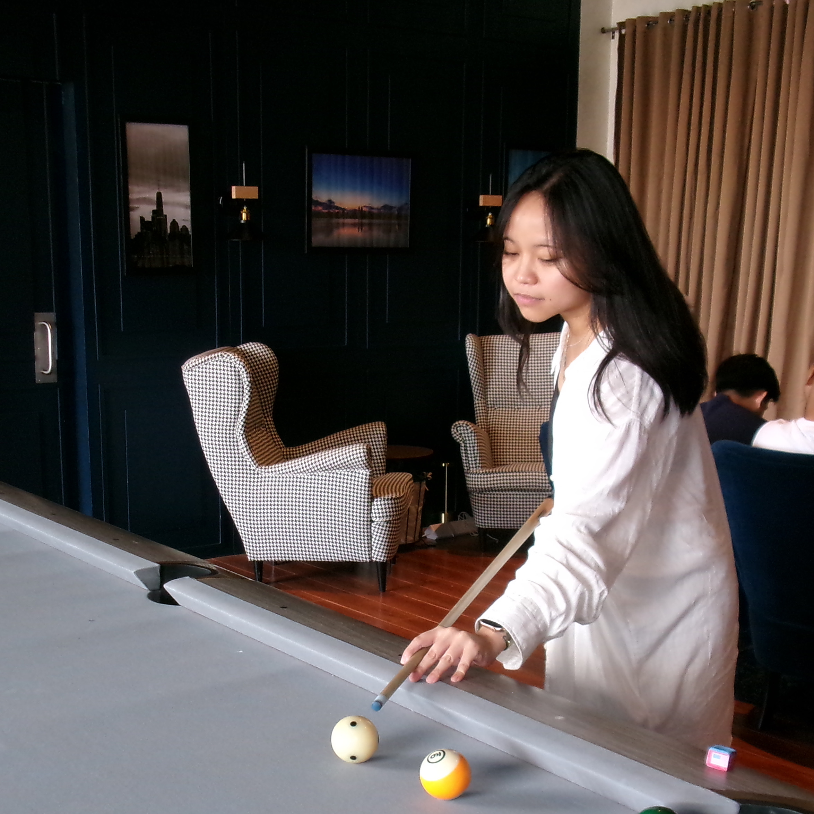

Welcome
“ Imagine a world with no bees, no butterflies, and no grasshoppers. Flowers wouldn’t grow, and pollination would stop. Without these insects, our food and forests would suffer, and even our survival would be in danger. This isn’t something far away—it’s happening now. If we don’t act, we’re not just losing insects, we’re risking our planet’s future.
References
- CBS News. (2024, February 24). Insect species are in decline, and some are endangered [Video]. YouTube. https://www.youtube.com/watch?v=_DmQP-5jSMQ
- Chemnitz, C. (2020, May 27). Global insect deaths: A crisis without numbers. Heinrich Böll Stiftung. https://tr.boell.org/en/2020/05/27/global-insect-deaths-crisis-without-numbers
- El-Shafie, H.A.F. (ed.) (2022) ‘Chapter 1’, in Global Decline of Insects. BoD - Books on Demand. Google Books
- Gordon, I. et al. (2019) We are losing the ‘Little things that run the world’, UN Environment. PDF
- Hallmann C.A. et al (2014) Declines in insectivorous birds are associated with high neonicotinoid concentrations. PDF
- Insect declines are a stark warning to humanity. (2019, March 20). United Nations. UNEP
- KPIX, CBS NEWS BAY AREA. (2025, July 5). UC Davis professor weighs in on world’s declining insect decline [Video]. YouTube. https://www.youtube.com/watch?v=AI6FEcRRehY
- Lister B.C. et. al (2018) Climate-driven declines in arthropod abundance restructure a rainforest food web. PNAS
- Peña, R. (2022) Peña: Insects are disappearing. SunStar
- Presse, A.F. (2019) Insects headed for mass extinction, study warns. Philstar
- Saravia, C. (2025). Insects Matter. Why Are We Wiping Them Out? Earth.Org. Earth.Org

Let's make the strike now for a better future!
About Me
- MO-ENV076: People and the Earth’s Ecosystem
- Name: Jonah Junko D. Agullana
- Section: A2101
- MO-ENV076 Milestone 1 A2101 Agullana, J.
- This homework is based on the Homework: Concept Map Worksheet and Milestone 1: What’s the issue? (Draft) that was previously submitted